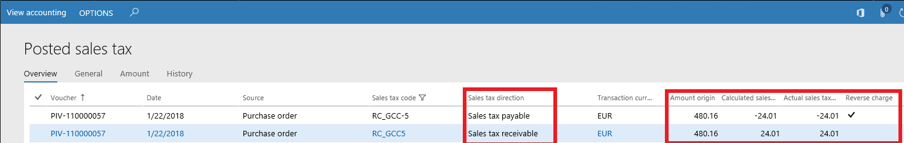

Mechanismus zur Verlagerung der Steuerschuld für USt./GST-Regelung
Important
Dynamics 365 for Finance and Operations hat sich zu speziell entwickelten Anwendungen entwickelt, mit denen Sie bestimmte Geschäftsfunktionen verwalten können. Weitere Informationen zu diesen Änderungen finden Sie im Dynamics 365-Lizenzierungshandbuch.
In diesem Thema wird ein allgemeiner Ansatz zum Einrichten der Funktionalität zur Verlagerung der Steuerschuld für Länder/Regionen beschrieben, welche die USt.- oder GST-Regelungen anwenden.
Die länder-/regionsspezifische Verfügbarkeit der Funktionalität wird durch die folgenden Funktionen im Arbeitsbereich Funktionsverwaltung verwaltet.
| Funktion | Land/Region |
|---|---|
| Keine spezielle Funktion | Österreich Belgien Bulgarien Kroatien Zypern Tschechische Republik Dänemark Estland Finnland Frankreich Deutschland Ungarn Island Irland Italien Lettland Liechtenstein Litauen Luxemburg Niederlande Norwegen Polen Portugal Rumänien Saudi-Arabien Singapur Slowakei Slowenien Spanien Schweden Schweiz Vereinigtes Königreich Vereinigte Arabische Emirate |
| Verlagerung der Steuerschuld für weitere Länder | Bahrain Kuwait Oman Katar |
| Mechanismus zur Verlagerung der Steuerschuld für USt./GST-Regelung aktivieren | Alle anderen Länder/Regionen, außer: Brasilien Indien Russische Föderation |
Weitere Informationen finden Sie im Abschnitt Mechanismus für Verlagerung der Steuerschuld für USt./GST-Regelung aktivieren weiter unten in diesem Thema.
Die Verlagerung der Steuerschuld ist ein Steuerschema, das die Zuständigkeit für die Buchhaltung und das Melden der Mehrwertsteuer vom Verkäufer auf den Einkäufer von Waren und/oder Dienstleistungen verschiebt. Daher melden Empfänger von Waren und/oder Dienstleistungen sowohl die Ausgangssteuer (in der Rolle eines Verkäufers) als auch die Vorsteuer (in der Rolle des Einkäufers) in ihrer MwSt.-Abrechnung.
Das Schema der Verlagerung der Steuerschuld wird in einigen Ländern oder Regionen nur für einige Waren und/oder Dienstleistungen implementiert, und es gibt zusätzliche Bedingungen oder Schwellenwerte bei Umsatzbeträgen. In anderen Ländern oder Regionen hängt die Zuständigkeit für die Mehrwertsteuerzahlung vom Status des Lieferanten und des Käufers ab. Wenn der Käufer verpflichtet ist, die MwSt. zu bezahlen, muss diese Tatsache eindeutig auf der Rechnung angegeben werden, die vom Lieferanten gestellt wird. So müssen z. B. die Worte "Verlagerung der Steuerschuld" auf der Rechnung vorkommen und es muss angegeben werden, welche Positionen vom Steuerschuldumkehrschema erfasst werden.
Um die Verlagerung der Steuerschuld anzuwenden, müssen Sie die folgende Einrichtung abschließen.
Mehrwertsteuercodes einrichten
Es wird empfohlen, dass Sie separate Mehrwertsteuercodes für Verkaufs- und Einkaufsvorgänge verwenden.
| Mehrwertsteuercode für Umsätze | Erstellen Sie einen Mehrwertsteuercode für Verkaufsvorgänge mit Verlagerung der Steuerschuld (Steuer > Indirekte Steuern > Mehrwertsteuer > Mehrwertsteuercodes). |
| Mehrwertsteuercode für Einkäufe | Erstellen Sie positive und negative Mehrwertsteuercodes für die Verlagerung der Steuerschuld für Einkäufe (Steuer > Indirekte Steuern > Mehrwertsteuer > Mehrwertsteuercodes).
Weitere Informationen finden Sie im nächsten Abschnitt "Mehrwertsteuergruppen und Artikel-Mehrwertsteuergruppen einrichten". |
Mehrwertsteuergruppen und Artikel-Mehrwertsteuergruppen einrichten
Es wird empfohlen, dass Sie separate Mehrwertsteuergruppen für Verkaufs- und Einkaufsvorgänge verwenden.
| Mehrwertsteuergruppen für Verkäufe | Erstellen Sie eine Mehrwertsteuergruppe für Verkaufsvorgänge mit Verlagerung der Steuerschuld (Steuer > Indirekte Steuern > Mehrwertsteuer > Mehrwertsteuergruppen). Geben Sie auf der Registerkarte Einstellungen den Mehrwertsteuercode für die Verlagerung der Steuerschuld in dieser Gruppe an. Aktivieren Sie die Kontrollkästchen Befreit und Verlagerung der Steuerschuld für den Mehrwertsteuercode. |
| Mehrwertsteuergruppen für Einkäufe | Erstellen Sie eine Mehrwertsteuergruppe für Einkaufsvorgänge mit Verlagerung der Steuerschuld (Steuer > Indirekte Steuern > Mehrwertsteuer > Mehrwertsteuergruppen). Geben Sie auf der Registerkarte Einstellungen die positiven und negativen Mehrwertsteuercodes in dieser Gruppe an. Aktivieren Sie das Kontrollkästchen Verlagerung der Steuerschuld für den Mehrwertsteuercode mit negativem Wert. |
| Artikel-Mehrwertsteuergruppen | Erstellen oder aktualisieren Sie die Artikel-Mehrwertsteuergruppe mit dem Mehrwertsteuercode, der einen negativen Wert hat (Steuer > Indirekte Steuern > Mehrwertsteuer > Artikel-Mehrwertsteuergruppen). Sie müssen den Produkten und Kategorien, für die die Verlagerung der Steuerschuld gilt, die Artikel-Mehrwertsteuergruppe zuweisen. |
Einrichten von Artikelgruppen für Verlagerungen der Steuerschuld
Auf der Seite Artikelgruppen für die Verlagerung der Steuerschuld (Steuer > Einstellungen > Mehrwertsteuer > Artikelgruppen für die Verlagerung der Steuerschuld) können Sie Gruppen von Produkten bzw. Diensten oder Einzelprodukte bzw. -dienste definieren, auf die die Verlagerung der Steuerschuld angewendet werden kann. Definieren Sie für jede Artikelgruppen für die Verlagerung der Steuerschuld die Liste der Artikel, Artikelgruppen oder Kategorien für Verkäufe und/oder Einkäufe.
Regeln für die Verlagerungen der Steuerschuld einrichten
Auf der Seite Regeln für die Verlagerung der Steuerschuld (Steuer > Einstellungen > Mehrwertsteuer > Regeln für die Verlagerung der Steuerschuld) können Sie die Anwendbarkeitsregeln zu Einkaufs- und Vertriebszwecke definieren. Sie können einen Satz von Regeln für die Verlagerung der Steuerschuld konfigurieren. Legen Sie für jede Regel die folgenden Felder fest:
- Dokumenttyp – Wählen Sie Bestellung, Kreditorenrechnungserfassung, Auftrag, Freitextrechnung, Debitorenrechnungserfassung und/oder Kreditorenrechnung aus.
- Länder-/Regionstyp des Partners – Wählen Sie Inland, EU, GCC oder Ausland aus. Falls die Regel für alle Handelspartner unabhängig vom Land oder der Region ihrer Adresse gilt, wählen Sie Alle aus.
- Inländische Lieferadresse – Aktivieren Sie dieses Kontrollkästchen, um die Regel auf Lieferungen im gleichen Land oder der gleichen Region anzuwenden. Dieses Kontrollkästchen kann nicht für die Dokumenttypen Kreditorenrechnungserfassung und Debitorenrechnungserfassung aktiviert werden.
- Artikelgruppe für Verlagerung der Steuerschuld – Wählen Sie die Gruppe aus, auf die die Regel angewendet werden kann.
- Schwellenwertbetrag – Das Schema der Verlagerung der Steuerschuld wird nur dann bei einer Rechnung angewendet, wenn der Wert der Artikel und/oder Services in der Gruppe der Verlagerung der Steuerschuld das hier angegebene Limit überschreitet.
Sie können auch die Felder Gültigkeitsdatum und Ablaufdatum verwenden, um den Zeitraum festzulegen, in dem die Regel gültig ist.
Darüber hinaus können Sie angeben, ob eine Benachrichtigung angezeigt wird und die Dokumentposition mit der Mehrwertsteuergruppe für Verlagerungen der Steuerschuld aktualisiert wird, wenn die Bedingung für diese Dokumentposition erfüllt wird. Die folgenden Optionen sind verfügbar:
- Keine – Die Dokumentposition wird nicht aktualisiert.
- Bestätigung – Eine Benachrichtigung wird angezeigt, um zu bestätigen, dass die Verlagerung der Steuerschuld angewendet werden kann.
- Satz – Die Dokumentposition wird ohne zusätzliche Benachrichtigung aktualisiert.
Länder-/Regionseigenschaften einrichten
Stellen auf der Außenhandelsparameter-Seite (Steuer > Einrichtung > Mehrwertsteuer > Außenhandel > Außenhandelsparameter) auf der Land-/Regionseigenschaften-Registerkarte das Land/die Region der aktuellen juristischen Person auf Inländisch ein. Legen Sie den Land-/Regionstyp der EU-Länder/Regionen fest, die am EU-Handel mit der aktuellen juristischen Person mit EU teilnehmen. Legen Sie den Land-/Regionstyp der GCC-Länder/Regionen fest, die am GCC-Handel mit der aktuellen juristischen Person mit GCC teilnehmen.
Einrichten von Standardparametern
Um die Funktionen für die Verlagerung der Steuerschuld zu aktivieren, legen Sie auf der Seite Hauptbuchparameter auf der Registerkarte Verlagerung der Steuerschuld die Option Verlagerung der Steuerschuld aktivieren auf Ja fest. Wählen Sie in den Feldern Mehrwertsteuergruppe für Bestellung und Mehrwertsteuergruppe für Auftrag die standardmäßigen Mehrwertsteuergruppen aus. Wenn eine Anwendbarkeitsbedingung für die Verlagerung der Steuerschuld erfüllt wird, wird die Bestellposition für den Auftrag oder die Bestellung mit diesen Mehrwertsteuergruppen aktualisiert.
Verlagerung der Steuerschuld für eine Verkaufsrechnung
Bei Aufträgen mit dem Schema der Verlagerung der Steuerschuld stellt der Verkäufer keine Mehrwertsteuer in Rechnung. Stattdessen gibt die Rechnung die Artikel, für die die Verlagerung der Steuerschuld gilt, und den Gesamtbetrag der Verlagerung der Steuerschuld an.
Wenn eine Verkaufsrechnung mit Verlagerung der Steuerschuld gebucht wird, weisen die Mehrwertsteuerbuchungen Steuerart Mehrwertsteuer sowie Null Mehrwertsteuer aus, und die Kontrollkästchen Verlagerung der Steuerschuld und Befreit sind aktiviert.
Verlagerung der Steuerschuld für eine Einkaufsrechnung
Für Einkäufe mit dem Schema der Verlagerung der Steuerschuld agiert der Käufer, der die Rechnung mit der Verlagerung der Steuerschuld erhält, für MwSt.-Buchhaltungszwecke als Einkäufer und Verkäufer.
Wenn eine Einkaufsrechnung mit Verlagerung der Steuerschuld gebucht wird, werden zwei Mehrwertsteuerbuchungen erstellt. Eine Buchung hat Steuerart die Vorsteuer. Die zweite Buchung hat die Steuerart Mehrwertsteuer und das Kontrollkästchen Verlagerung der Steuerschuld ist aktiviert.
Im folgenden Bildschirmfoto hat eine Buchung die Steuerart Vorsteuer und die andere Buchung weist die Steuerart Mehrwertsteuer auf.

Mechanismus für Verlagerung der Steuerschuld für USt./GST-Regelung aktivieren
Suchen Sie im Arbeitsbereich Funktionsverwaltung die Funktion Aktivieren und wählen Sie sie aus.
Nachdem Sie die Funktion aktiviert haben, wird die Registerkarte Umkehr der Steuerschuld in allen juristischen Personen verfügbar. Aktivieren Sie die Funktion zur Verlagerung der Steuerschuld für eine juristische Person, indem Sie die Option Verlagerung der Steuerschuld aktivieren auf Ja.
Die folgenden Seiten und Menüelemente, die mit der Funktionseinstellung zusammenhängen, sind verfügbar:
- Artikelgruppen für die Verlagerung der Steuerschuld (Steuer > Einrichten > Mehrwertsteuer > Artikelgruppen für die Verlagerung der Steuerschuld). Weitere Informationen finden Sie im Abschnitt zum Einrichten von Artikelgruppen für die Verlagerung der Steuerschuld.
- Regeln für die Verlagerung der Steuerschuld (Steuer > Einrichten > Mehrwertsteuer > Regeln für die Verlagerung der Steuerschuld). Siehe Regeln für die Verlagerungen der Steuerschuld einrichten.
- Außenhandelsparameter (USt. > Einrichten > Mehrwertsteuer > Außenhandel > Außenhandelsparameter). Siehe Länder-/Regionseigenschaften einrichten
Das Kontrollkästchen Verlagerung der Steuerschuld ist auf den Seiten Mehrwertsteuergruppe und Gebuchte Mehrwertsteuer verfügbar. Weitere Informationen finden Sie in den Abschnitten Mehrwertsteuergruppen und Artikel-Mehrwertsteuergruppen einrichten, Verlagerung der Steuerschuld für eine Verkaufsrechnung und Verlagerung der Steuerschuld für eine Einkaufsrechnung.